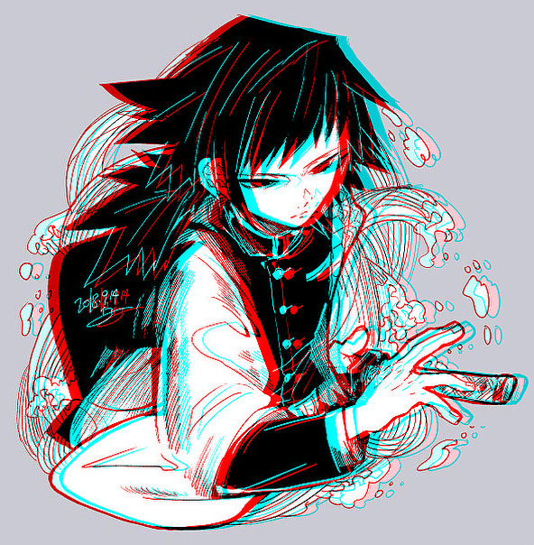
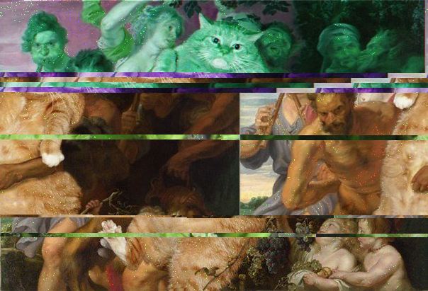
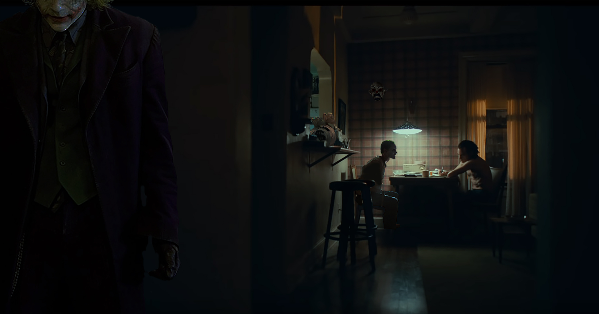
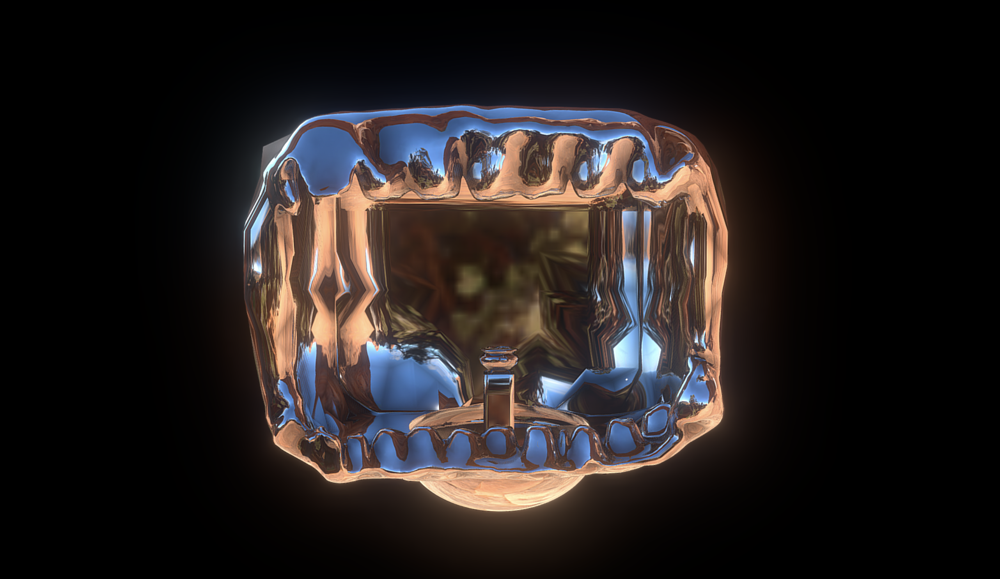

🏡
👩
🎞
📷
Work

Anaglyph
This is an image fron "Demon Slayer" and the character is Tomioka Giyuu. Inspired by the love for this managa.

Glitch Art of "Botticelli, The Birth of Venus"
"Botticelli, The Birth of Venus" is from the artsit Fatcat Art. I'm always a cat lover and the art this aritst made is fun and joyfuly, so I decided to made a glitch art out of it.

Joker Collage
I'm a Joker movie fans. I combined the three different Joker in three different movies in one single scene. This scene is from the movie 'Joker 2019'. The other two Jokers are from 'Suicide Squad'and "Dark Knigh Rises".
Fushimi Inari-taisha
A 3D views that I created of the "Fushimi Inari-taisha", I never been to this temple, but I wished someday I can visit it. Created with Mixmeshers and effects with sketchfab. Click the title to view the model and more details.
Your browser does not support the video tag.
Highlight of My 2019
A collection of videos that represents some important and memorable moement of my 2019.
Your browser does not support the video tag.
Say Stop to Cyberbullying
This video is trying to promote the idea of cyberbullying and know when to say stop to it. People can comment and repost others people's post nowadays and sometimes cyberbullying occurs. It invloved sensetive content and trigger warming.
Your browser does not support the video tag.
Simpsons Gif Mix
Simpsons is a cartoon that I watched during High school. I found it funny and relaxing while watching it. The idea of this project is to cheer people up with funny gifs.
Your browser does not support the video tag.
Garden of Fine Art Exhibit
The Exhibit is credted for Art 75. My classmate Tiffany Chen corrobrate with me and create this exhibit for audiences to browse arts in a relaxing environment.

Greed
"As long as Greed is stronger than compassion, there will always be suffering.” --- Rusty Eric. Greed will always take place in everyone's heart, no matter what they are fighting for.